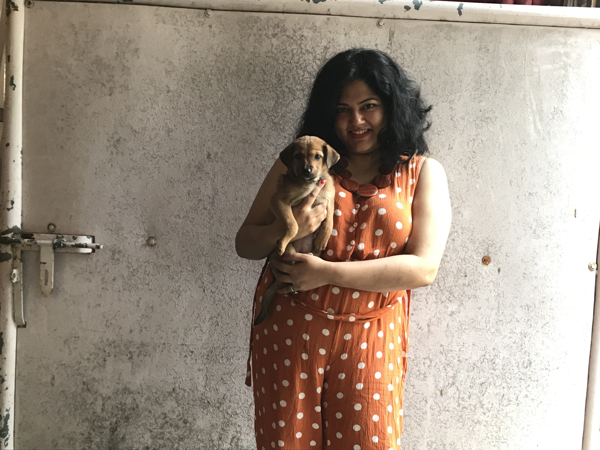
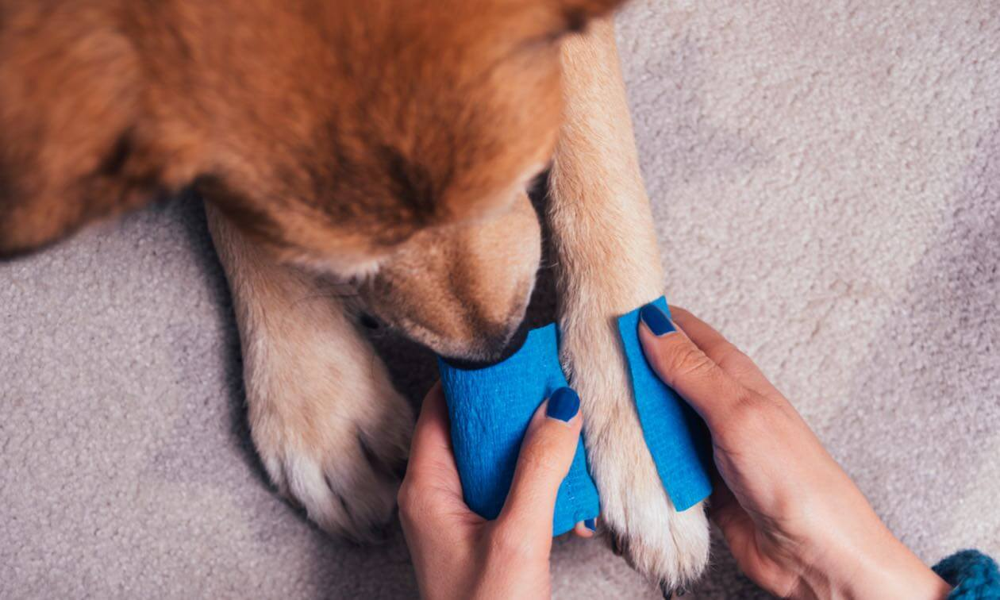

Why Adopt an Indie Dog?
Indie dogs are resilient, loving, and uniquely suited to our climate. Here's why adoption changes lives—yours and theirs.
Read more →Stories, opinion pieces, and animal care tips
Short videos on advocacy and care
How we treat animals reflects the consciousness of our society.
Simple tips for caring for street and community animals.
Read our blog posts on adoption, care, and advocacy
Indie dogs are resilient, loving, and uniquely suited to our climate. Here's why adoption changes lives—yours and theirs.
Read more →
Practical ways to feed, water, and support community dogs safely and responsibly.
Read more →
Rescue work is more than finding homes—it's about seeing each animal as sacred and sentient. When we rescue, we don't just save a life; we shift the culture around us. Every adoption, every foster, every shared post adds to a wave of compassion.
Our community has grown because people like you choose to see. You choose to adopt instead of buy, to feed a street dog, to report cruelty, to volunteer. Thank you for being part of this change.